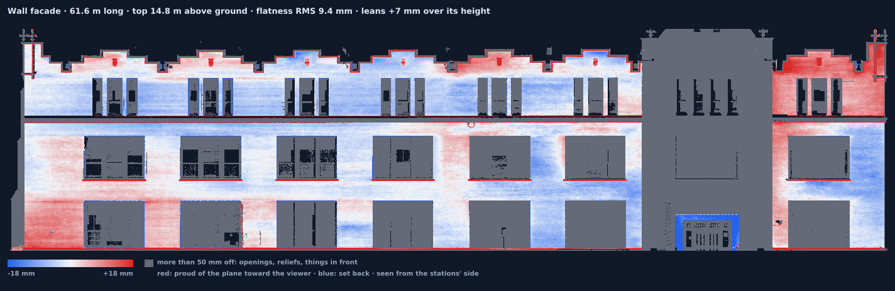

Wall plumb and flatness
Is the long facade plumb, within a quarter inch in ten feet?
The administration building at the University of Idaho. The outlined face runs 61.6 m. The gabled bay stands about 0.9 m proud of its plane, so the elevation draws that bay grey.

The longest planes the detector kept. w2 is the 44.4 m stretch of the face above. The bay is the gap between that stretch and w8.
| Wall | Length m | Top above ground m | Lean over height mm | Flatness RMS mm | 95% within mm | 3 m windows within 6 mm | Openings and reliefs |
|---|---|---|---|---|---|---|---|
| w1 | 49.2 | 15.9 | +46.5 | 15.0 | 37.3 | 33% | 35% |
| w2 | 44.4 | 14.6 | +4.1 | 7.6 | 10.4 | 55% | 29% |
| w3 | 41.2 | 14.9 | +1.4 | 8.9 | 18.2 | 66% | 28% |
| w4 | 17.7 | 15.6 | +0.7 | 11.4 | 29.1 | 39% | 35% |
| w5 | 15.8 | 8.4 | +103.6 | 22.0 | 43.9 | 55% | 49% |
| w6 | 15.4 | 16.2 | +3.1 | 19.8 | 42.0 | 12% | 61% |
| w7 | 14.0 | 15.3 | −2.4 | 11.4 | 31.9 | 35% | 43% |
| w8 | 7.8 | 14.7 | +26.4 | 8.2 | 10.8 | 62% | 33% |
A positive lean means the top leans toward the side the scanner stood on. Where a wall is half window, read the picture before the number.
What you get
A picture of every wall, the numbers beside it, and a plan. The report for this building has all 33 walls.
On site
Stations that see the faces you care about, joined into one map as you go. You bring the tolerance in your own words.
Worth knowing
The number mixes every station that saw the wall. Ribbed cladding reads as its ribs. The top of a tall facade is farther from the scanner than the wall at eye level.